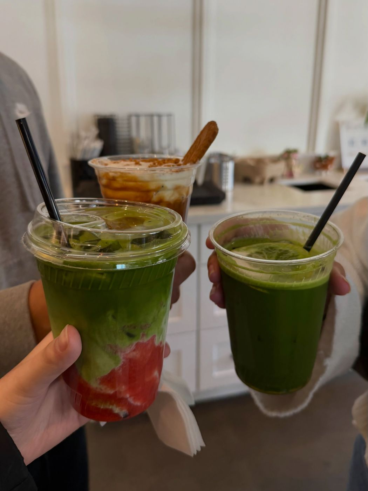
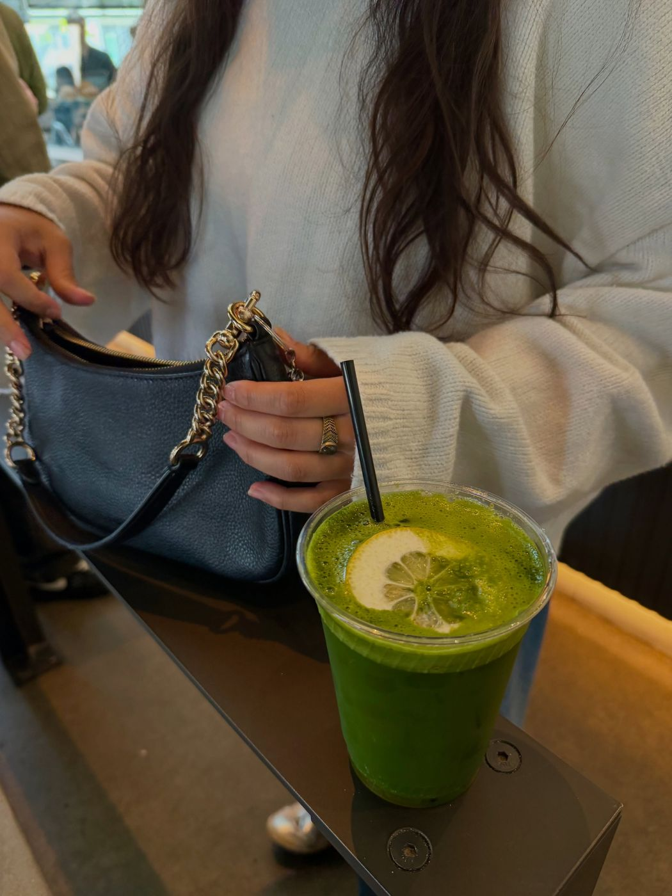
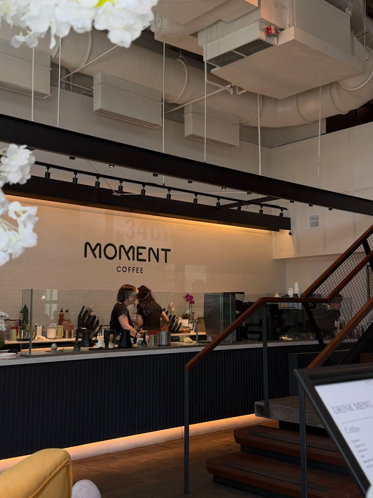

Moment Coffee in Fremont



Iced strawberry matcha, 8.5/10. The matcha and strawberry play really well together, neither one overpowers the other. Fruity, earthy and yummy.
Yuzu matcha tonic, 9/10. The yuzu citrus makes this super refreshing, basically a matcha energy drink.
Biscoff iced latte, 8/10. Pretty sweet but the coffee flavor still came through, which is kind of expected with sweet latte and sweet foam combos.
Overall all the drinks we got were delish and we'd definitely stop by again.
Featuring Maria.
what i got: iced strawberry matcha (8.5/10)
see this spot on the map